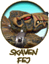
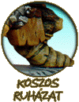
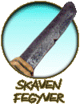
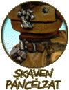

| |
Hogyan fessünk skavent
Az ûrgárdisták festésének kivesézése
után most evezzünk merõben más vizekre, és nézzük
meg, hogy mi is kell kedvenc patkányaink kifestéséhez.
Elõkészületek
Mint minden figura elõkészítése, a
skaveneké is a sorjázással kezdõdik. Egy éles
késsel finoman kapargatva távolítsuk el az öntési
hulladékot a mûanyag figuráról (fém figurák
esetében pedig reszelõvel tegyük ugyanezt). Ha
a figuránk fémbõl van, akkor érdemes csapokkal
megerõsíteni az illesztési pontokat, mielõtt
összeragasztjuk. A mûanyag modellek esetében
viszont nyugodtan elhagyhatjuk ezt a lépést,
mivel a mûanyagragasztók olyan módon olvasztják
egybe a különálló részeket, ami szükségtelenné
tesz bármilyen további beavatkozást. A figura
darabokban való festése ezeknél a modelleknél
nem annyira egyértelmû, mint teszem azt az ûrgárdisták
esetében. Itt ugyanis nem lesznek vállvértek,
amik eltakarják a ragasztási felületet. Éppen
ezért a darabokban festés, csak akkor javasolt,
ha van takarásban lévõ felület a modellen vagy
nagyon megnehezítené az összeragasztott figura
a festést. Amennyiben darabokban festünk, akkor
érdemes a ragasztási felületek környékét
festetlenül hagyni és, ragasztás után együtt
lefesteni õket.
Alapozás elõtt még elkészítjük a
talpakat, ami úgy történik, hogy lekenjük az
alapot ragasztóval, és madárhomokot szórunk
bele. A karakterek talpait érdemes sziklákkal,
eldobált fegyverekkel vagy egyéb kiegészítésekkel
is díszíteni. Ha mindez megvan, és minden
szempontból késznek érezzük a figurát, akkor
lefújjuk fekete alapozóval (azért nem fehérrel,
mert skavenek esetében a fekete sokkal célravezetõbb
és jelentõsen megkönnyíti a késõbbi munkát).
Festés
Mint az ûrgárdistáknál, itt is részenként
tárgyalom majd a modelleket, minden hangsúlyos
területtel külön foglalkozva. A skavenek esetében
azonban nem beszélhetünk akkora hasonlóságról,
mint, ami az ûrgárdistákat jellemzi. Éppen ezért
nem árt lefektetni néhány általános érvényû
szabályt. Ezekre a legtöbbször külön is felhívom
a figyelmet, de érdemes állandóan szem elõtt
tartani, és ahol csak lehet, alkalmazni õket.
Elõször is ne engedjünk a kísértésnek,
és soha ne használjunk élénk színeket. Mindig
maradjunk meg a barnás, sötét, koszos árnyalatoknál.
Ezek passzolnak igazán, egy föld alatti vájatból
frissen elõmászott skavenhez. Ha mégis úgy döntenénk,
hogy használni szeretnénk ezektõl eltérõ színeket
is a figurán, akkor azt mindig az adott szín,
egy sötétebb, “koszosabb” árnyalatával
tegyük. Piros helyett használjunk például bordót,
élénk zöld helyett, sötét, méregzöldet,
stb.
A másik általánosan megjegyzendõ dolog
a skavenekkel kapcsolatban, hogy részben a fent
említettekbõl kifolyólag, nem találunk rajtuk
nagy, tiszta részeket. Egy skaven nem a higiéniájáról
híres, így igyekezzünk csínján bánni a homogén
felületekkel. Ezek elkerülésére a legjobb módszer,
ha átfestjük a kívánt részt erõsen (tíz
vagy nagyobb arányban) hígított fekete festékkel.
Ez sokszor már elég ahhoz, hogy elmélyítse a
színeket, befolyjon a kisebb mélyedésekbe, de mégse
változtassa meg igazán az átfestett felület
alapszínét. Egyszóval ad neki egy “koszos”
összhatást, ami olyannyira jellemzõ a
skavenekre. A festés folyamán állandóan kísérjük
figyelemmel a figura egészét, és, ha egy terület
túl tisztára, túlságosan elütõre sikeredett,
akkor ne féljünk használni a fenti technikát.
A továbbiakban pedig akkor nézzük a
hangsúlyosabb részeket külön-külön.
Bunda: Itt elég könnyû dolgunk
van, mivel csak drybrush-olni kell azokat a
felületeket, ahol szõr található a figurán.
És igazából itt jön le elõször a fekete
alapozásnak az elõnye. Ha ugyanis ez nem lenne,
akkor most át kéne festenünk az egész felületet
feketével. Bár egy vékony rétegben, még így
is érdemes egyszer átkenni, mert nem biztos,
hogy mindenütt sikerült maradéktalanul
lealapoznunk a figurát, és ne a drybrush után
derüljön ki, hogy foltos alatta a felület.
Ha megvan a fekete alap, akkor jöhet a
drybrush, azaz a szárazecsetelés, amit két rétegben
kell felvinnünk a figuránkra. Ha valaki esetleg
nem ismerné az említett eljárást, annak álljon
itt tömören a lényeg. Tehát arról van szó,
hogy egy vastag ecsetet visszavágunk körülbelül
a felére, és úgy festünk vele, hogy a festéket
elõtte szinte teljesen kitöröljük az ecsetbõl
(innen a dry, azaz száraz elnevezés). Ezek után,
ha egy érdes felületen végighúzzuk az ecsetet,
akkor csak a kiemelkedõ részek lesznek festékesek,
az alul találhatóak tiszták maradnak. Röviden
ennyi a lényeg. Elõször tehát az alapszínt
visszük fel a felületre, majd utána ennek a színnek,
egy kicsit kivilágosított változatát. A második
rétegnél jól töröljük ki az ecsetet, hogy éppen
csak érzékelhetõ legyen a kivilágosítás, és
látható maradjon a szõrnek szánt eredeti árnyalat
alatta.
A bunda színe egyébként nagyon sok féle
lehet. Tulajdonképpen a palettán szereplõ összes
barna-árnyalat számításba jöhet, de nem ritka
a szürke vagy fekete szõr sem. Amit még meg
kell említeni a bunda festése kapcsán, hogy érdemes
ezt a mûveletet legelõre beiktatni a figura festésekor,
és inkább utána vigyázni, hogy ne fessünk rá.
Ugyanis a drybrush-olás mindig nagy, tompa
ecsetekkel történik, és ezekkel nem igazán
tudjuk elkerülni, hogy más területeket is össze
ne festékezzünk a kívántakon túl. És ugye
nem kell mondanom, mennyire kellemetlen, ha azokat
elõtte már készre megcsináltuk.
|  |
Bõr: Bár patkányaink
eredendõen szõrösek, mégis sok
olyan terület található rajtuk,
ahol kilátszik a csupasz bõrük:
pofa, könyök, térd, stb. És
mivel ezek a területek általában
jelentõsen elütnek a figura egészétõl,
ezért hangsúlyos szerephez
jutnak, és kifestésük nagy
odafigyelést igényel. Elõször
is meg kell határoznunk az alapszínt,
amilyenre a bõrt festeni szeretnénk.
Ez általában rendes bõrszín
(mondjuk bronzed flesh) és
valamilyen világos barna keveréke
(például snakebite leather). Az
ideális arányt mindenki maga döntse
el, attól |
|
|
függõen, hogy sötétebb vagy világosabb
árnyalatúra szeretné-e a skavenjeit.
Ezután erõsen fel kell hígítani a
kapott színt, amelynek segítségével elérhetjük,
hogy a bunda és a bõr között szép átmenetet
keletkezzen. |
Ha mindez megvan, akkor fessük át vele
egyetlen, vékony rétegben a kívánt felületet.
Ha mindent jól csináltunk, akkor a híg festéknek
hála át fog tûnni az alatta lévõ fekete
alapozás. Ezután újabb réteget festünk fel,
de ezúttal a szegélyek közelében kihagyunk egy
vékony sávot az elõzõ rétegbõl. Majd még
egyet, még nagyobb kihagyással. Ha jól csináltuk,
akkor a felület szinte észrevehetetlenül fog átváltani
feketébõl bõrszínbe, ami a két eltérõ textúrájú
terület közti összhangot adja meg. Ezután világosítunk
kicsit az alapszínen és kihúzgáljuk vele a
magasabban fekvõ területeket, például a kézen
az ujjak éleit, az arcon a füleket, a szemöldököt
vagy a kiállóbb pofacsontot. Ha mindezzel
megvagyunk, de a bõr felülete mégis túl
egyenletes lett, akkor mossuk át az egészet
egy-tíz arányban hígított fekete festékkel.
Ezzel koszosabb hatása lesz, ami jobban illik egy
skavenhez.
|
Ruhák: Érdemes a bõrfestésnél
fentebb leírtakat használni itt is, csak
természetesen a megfelelõ színekkel.
Tehát, teszem azt egy ing kifestése
nagyon hasonlóképpen történik, mint
amikor a skaven pofáját festettük, csak
más árnyalatokat használunk, és a
bunda találkozása helyett, itt a mélyebben
fekvõ területek felõl kezdjük kivilágosítani
a felületet a fekete alapból. Ezután
ugyanúgy kihúzzuk a magasabban fekvõ éleket
(ruhák redõit, széleit), az alapszín
világosabb változatával, és végül
szintén átmossuk feketével, ha túl
homogénre sikerült a felület. |
 |
Farok: Most talán néhányan azt kérdezik
magukban, hogy minek külön foglalkozni egy ilyen
nyilvánvaló részlettel. De én úgy gondolom,
hogy nem árt, ha itt is leírom a
tapasztalataimat. Két lehetõség áll rendelkezésünkre:
|
Vagy szárazecseteljük a
skaven farkán található szelvényeket
vagy megfestjük õket külön-külön.
Viszont mivel a szárazecsetelés
után, szinte mindig kell egy
kicsit utána igazítani, így akár
rá is szánhatjuk azt az idõt és
megcsinálhatjuk õket egyenként.
Ne essünk kétségbe, ha véletlenül
belefestünk a szelvények közti
mélyedésekbe, egy utólagos, hígított
fekete átmosás megoldja a problémát. A szín itt is a bõrnél
taglalt világosbarna és bõrszín
keveréke. Ha mindez megvan, akkor
már csak a highlight-olás van hátra.
Ehhez, egy kis |
|
|
fehér hozzáadásával enyhén kivilágosítjuk
az alapszínt, és egy vékony ecsettel
minden egyes szelvény szélére, egy vékony
csíkot festünk. Ha nagyon meglátszik a
határvonal a két szín találkozásánál,
akkor fessük át az alapszín enyhén hígított
változatával a világosabb rétegek határát,
ezzel úgymond egybemosva a két színt. |
Fegyverek: Itt is próbáljuk elkerülni,
hogy a fegyverek újnak látszanak. Bár nem kell,
mondjuk az élõholtakhoz hasonlóak rozsdásra és
ütött kopottra festeni õket, de a csillogó
fegyverek mindenképpen hátrányosan hatnak a
patkányfajzatok összképére.
|
A legegyszerûbb módszer ennek
elérésére, ha a fegyver színéül
szolgáló festéket (mondjuk boltgun
metal-t), szárazecset technikával visszük
fel a fekete alapra. Ám ebben az esetben
még az általánosnál is szárazabbra töröljük
az ecsetet, hogy csak nagyon kevés festék
kerülhessen fel a felületre. Akár több
rétegben is felvihetjük a festéket, ha
túl átlátszónak találnánk a fekete
alapot, de mindig tartsuk szem elõtt,
hogy nem szabad csillogóan újnak tûnnie
a fegyvernek. Ennek hatására egyébként
a fegyverek, sötétebbek lesznek, ápolatlannak
hatnak majd. |
 |
Páncélzat: Alapvetõen két lehetõség közül
választhatunk. Vagy fém, vagy bõr páncélzatot
festünk. Ha a modell nem kívánja meg speciálisan
az egyiket (tehát, ha mondjuk egy huszadrangú klánpatkányról
beszélünk), akkor lehetõleg a bõrpáncélokat
részesítsük elõnyben.
|  |
A bõrpáncélok festése
a ruháknál már taglalt módon történik:
a fekete alapot, fokozatosan kivilágosítjuk
a kívánt színnel (jelen esetben
valamilyen barna árnyalattal).
Itt viszont nem minden esetben
fontos utólag átmosni a felületet
feketével, ezt a figura egészének
szemrevételezése után tudjuk
eldönteni, attól függõen, hogy
nagyon elüt-e a figura egészétõl.
A fém páncélok festése szintén
nem egy bonyolult mûvelet, csak a
fegyvereknél már leírtakhoz
hasonlóan, drybrusholni kell
valamilyen fémszínnel (boltgun
metal tökéletes erre a célra). |
|
|
Annyi az eltérés, hogy a fém páncélt
viszont utólag nyugodtan átmoshatjuk
feketével, nagyon kellemes sötét tónust
fog kölcsönözni neki. |
Zárszó
Számos olyan rész található még egy
skavenen, amivel nem foglalkoztam külön, de úgy
érzem, hogy az összes fontosabb részlettet
sikerült kiveséznem. Ami nem található meg
ezek közt, azt próbáljuk az általános irányelvek
szerint kifesteni, tehát minél koszosabb és sötétebb
legyen. Ha ezeket szem elõtt tartjuk és
folyamatosan figyelemmel kísérjük a skaven összképét,
akkor nagy baj már nem lehet. :)
Ötleteket, kiegészítéseket szívesen
fogadok e-mailben vagy a fórumon!
Írta: Rince
(A mellékelt képekhez kizárólag saját
festéseimet használtam fel.)
|
|